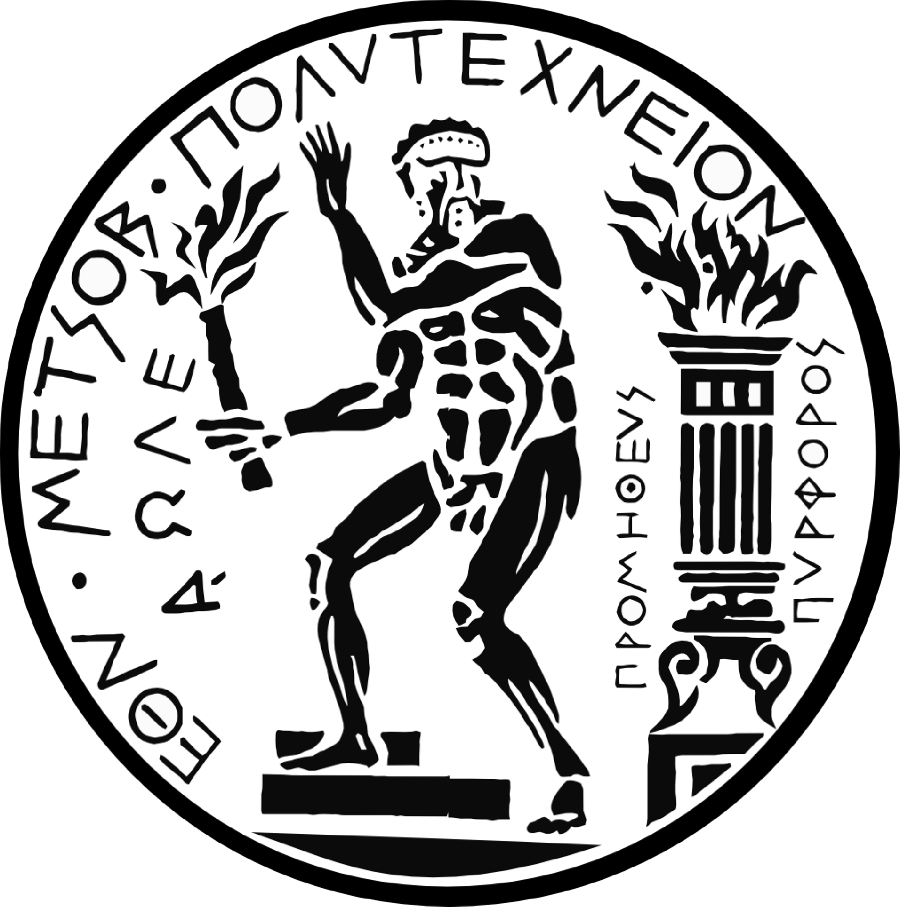

This is a list of all the courses I have been involved with over time. For material of current ones (for students) visit the university portal.
 Reykjavik University
Reykjavik University
Instructor
- Theory of computation - Autumn 2021
- Real-Time Models - Summer 2021
- Modeling and Verification - Spring 2021
- Logic in Computer Science (taught every two years) - Spring 2020
Teaching assistant
- Theory of computation - Autumn 2020 & 2019
- Real-Time Models - Summer 2019 & 2022
- Modeling and Verification - 2020 & 2019
 National Technical Univercity of Athens
- Fundamentals of Computer Science: Dep. of Electrical Engineering and Dep. of Applied mathematics - Autumn & Spring 2018
- Discrete Mathematics I. Dep of Electrical Engineering Autumn 2018
- Introduction to Programming (C/C++). Dep of Electrical Engineering Autumn 2018 & 2017